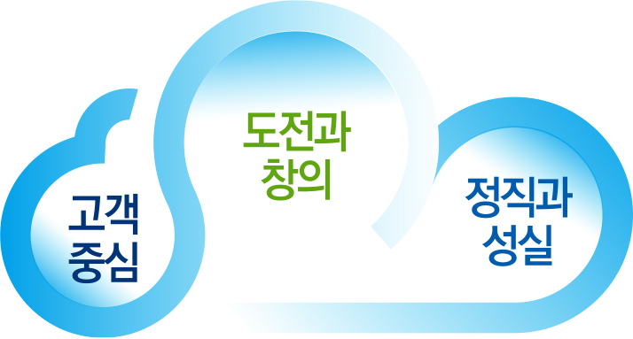
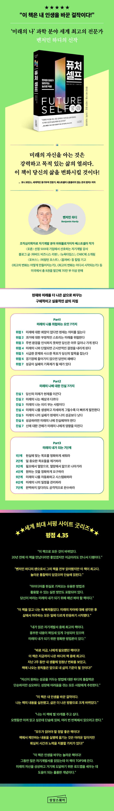

교보문고
교보문고는 고객의 진정한 지식 및 (예술)문화콘텐츠 파트너입니다.
우리의 사명은 모든 사람이 다양한 지식 및 (예술)문화콘텐츠를 경험해 지적/문화적/사회적으로 성장할 수 있도록 도와드리는 것입니다.
핵심가치
퓨처셀프
책소개
‘미래의 나’를 적용하는 과학 분야 세계 최고의 전문가,
자기계발 분야 파워블로거이자 베스트셀러 작가의 신작
세계적인 동기부여 전문가, 토니 로빈스 강력 추천!
현재와 미래를 더 가치 있게 바꾸고 싶다면,
‘미래의 나’와 연결하라!
살 날이 얼마 남지 않은 ‘미래의 내’가 현재로 시간 여행을 왔다고 상상해보자. ‘현재의 나’는 해야 할 일은 미뤄둔 채 소파에 누워 핸드폰을 보느라 시간 가는 줄 모른다. 당장 사고 싶은 것, 먹고 싶은 것에 생각 없이 돈을 쓰고, ‘다음 달의 나’에게 결제를 미룬다. 자극적이고 간편한 정크 푸드를 즐겨 먹으며 건강은 생각하지 않는다. 어린 자녀와 눈을 맞추고 시간을 보내기보다 잔소리와 고성이 오가는 전쟁 같은 하루하루를 보낸다. 이 모습을 본 ‘미래의 나’는 과연 어떤 말을 하고 싶을까? 혹시 지금의 내 모습과 크게 다르지 않다고 생각하는가? 미래의 모습이 그려지지 않는다면, 현재의 내가 좀 더 나은 모습이기를 원한다면 이 책이 해답을 제시해줄 것이다.
‘미래의 나는 어떤 모습일까?’라는 질문은 우리가 인생에서 쉽게 놓치는 중요한 진실에 이르게 한다. 즉, 미래의 나와 연결될수록 현재 더 나은 삶을 살게 된다는 것이다. 이 책은 미래의 내가 어떤 모습일지 깊이 생각해보고, 지금 그 사람이 되는 방법을 구체적으로 알려주는 인생 지침서이다. 상상한 미래 자아는 현실에서 원동력이 되어 목표와 우선순위가 달라지고, 이에 맞게 행동하게 만든다. 그렇기에 우리가 다시 예전 모습으로 돌아가려 하거나 의지가 약해질 때마다, 혹은 작은 성취를 맛본 후 다음 목표를 정해야 할 때 이 책을 옆에 두고 수시로 꺼내 보기를 권한다.
이 책의 저자인 벤저민 하디는 저명한 조직심리학자로, ‘미래의 나’를 적용하는 과학 분야에서 세계 최고의 전문가다. ‘미래의 나’와 관련된 연구가 점점 많아지고 있는 가운데, 그는 이 주제를 완벽하게 다룬 책을 발표했다. 그의 오랜 연구 결과와 집약된 이론을 국내에서 책으로 만날 수 있게 된 것이다. 그는 팟캐스트와 유튜브, 웹사이트, 기업 강연을 통해서도 ‘미래의 자신’을 명확하게 하고, 목표한 방향으로 이끄는 실용적인 전략을 공유하며 많은 사람의 성장과 발전을 돕고 있다.
이 책은 크게 세 파트로 구성되어 있다. 파트1은 ‘미래의 나’를 위협하는 요인 7가지를, 파트2는 ‘미래의 나’에 대한 진실 7가지를, 파트3은 ‘미래의 내’가 되는 7단계를 구체적으로 제시한다. 각 단계마다 자신을 점검해볼 수 있는 체크리스트와, 미래의 나와 연결하는 활동들이 포함된 워크지를 제공하고 있다. 또한 각 장의 핵심 내용은 일러스트를 통해 기억에 선명하게 남도록 도와주고, 파트가 끝날 때마다 KEY POINT로 요약해서 정리해준다. 특히 ‘미래의 나’와 연결하는 것이 중요하다는 점을 유명인들의 일화를 통해 소개해 재미를 더하고, 쉽게 이해할 수 있도록 설명한다. 이 책은 단순히 ‘미래의 나’를 생각에서 그치지 않고 행동하게 만드는 구체적인 방법을 제시한다는 점에서 당신의 삶을 변화시키는 데 최고의 안내자 역할을 할 것이다.
작가정보
자기계발 분야의 파워블로거이자 탁월한 기획자, 작가이다. 열한 살 때 부모님이 이혼했고, 우울증에 빠진 아버지는 약물 중독자, 둘째 동생은 마약 중독자, 막내 동생은 자폐아인 불우한 가정환경 속에서 자랐다. 저자는 자신의 환경을 잊기 위해 게임에 빠져 지냈고 겨우 고등학교를 졸업한 후 전문대학에 다니며 식당 아르바이트를 전전했다. 그러다 문득 자신이 꿈꾸던 모습과 동떨어진 삶을 사는 자신을 발견하고는 스무 살 되던 해 고향을 떠난다. 미국의 정반대에 위치해 있던 교회에서 2년간 봉사활동을 하고 고향으로 돌아온 그는 놀라운 사실을 목격한다. 멀리 떠나 있던 자신은 완전히 달라진 반면, 약물과 마약에 빠져 있던 가족, 게임 중독에서 벗어나지 못했던 친구들의 삶은 2년 전과 전혀 달라지지 않았던 것이다. 저자는 그 일로 사람의 삶을 바꾸는 가장 중요한 요인은 변화에 대한 의지나 태도가 아니라 ‘환경’이라는 사실을 깨닫고 가장 효과적이고 확실한 변화의 해법을 연구하기 시작했다. 이 책에는 저자가 자신의 삶을 통해 얻은 실질적 경험과 10여 년에 걸친 연구 결과가 고스란히 담겨 있다. 환경을 바꿔 인생을 설계한 후 완전히 다른 삶을 살게 된 저자는 4년제 대학 과정을 3년 만에 마쳤고 현재 클렘슨대학교에서 심리학 박사 과정을 밟고 있다. 한국의 ‘브런치’ 같은 글쓰기 플랫폼인 ‘미디엄’에 글을 연재하고 있으며 매달 수백만 명의 독자가 그의 글을 읽는다. 《포브스》, <허핑턴 포스트>, <비즈니스 인사이트>, <뉴욕 옵저버> 등에도 칼럼을 기고하고 있다.
조직심리학자로 자기계발 분야 파워블로거이자 베스트셀러 작가다. 그는 미래의 나를 적용하는 과학 분야에서 세계 최고의 전문가다. 클램슨 대학교에서 산업 및 조직심리학으로 박사 학위를 받았다. 현재 〈The Daily Upgrade〉라는 팟캐스트를 통해 미래의 자신을 명확하게 하고, 더 나은 결정을 내리고, 정기적으로 삶의 방식을 도약하는 데 도움이 되는 실용적인 전략을 공유하고 있다. 그의 블로그는 2015~2018년 동안 글쓰기 플랫폼인 ‘미디엄’에서 1위에 오르고, 1억 명이 넘는 사람들이 읽었으며 〈하버드 비즈니스 리뷰〉, 〈뉴욕타임스〉, CNBC 등에 실렸다. 또한 〈포브스〉, 〈허핑턴 포스트〉, 〈옵저버〉 등에도 칼럼을 기고하고 있다. 저서로는 《최고의 변화는 어떻게 만들어지는가》, 《최고의 변화는 어디서 시작되는가》 등이 있으며 미국에서 총 8권을 발간해 70만 부 이상 판매됐다. 현재 플로리다주 올랜도에서 살고 있다. 웹사이트 www.futureself.com
목차
프롤로그: 현재와 미래가 달라지는 놀라운 혁명
Part1 미래의 나를 위협하는 요인 7가지
위협 1: 미래에 대한 희망이 없다면 현재는 의미를 잃는다
위협 2: 과거에 대한 부정적인 스토리는 미래를 위협한다
위협 3: 주변 환경을 인식하지 못하면 당신은 아무 길이나 가게 된다
위협 4: 미래의 나와 단절되면 근시안적인 결정을 내리게 된다
위협 5: 시급한 문제와 사소한 목표가 당신의 발목을 잡는다
위협 6: 경기장에 들어가지 않으면 당연히 패배다
위협 7: 성공이 실패의 기폭제가 될 때가 있다
key point: 미래의 나에 대한 위협
Part2 미래의 나에 대한 진실 7가지
진실 1: 당신의 미래가 현재를 이끈다
진실 2: 미래의 나는 예상과 다르다
진실 3: 미래의 나는 피리 부는 사람이다
진실 4: 미래의 나를 생생하고 자세하게 그릴수록 더 빠르게 발전한다
진실 5: 미래의 나의 실패가 현재의 나의 성공보다 낫다
진실 6: 성공하려면 미래의 나에 진실해져야 한다
진실 7: 신에 대한 견해가 미래의 나에게 영향을 미친다
key point: 미래의 나에 대한 진실
Part3 미래의 내가 되는 7단계
1단계: 현실에 맞는 목표를 명확하게 세워라
2단계: 덜 중요한 목표들을 제거하라
3단계: 필요에서 열망으로, 열망에서 앎으로 나아가라
4단계: 원하는 것을 정확하게 요구하라
5단계: 미래의 나를 자동화하고 시스템화하라
6단계: 미래의 나의 일정을 관리하라
7단계: 완벽하지 않더라도 공격적으로 완수하라
key point: 미래의 내가 되는 단계